Total views
Written by gigapouch, May 30, 2015
Getting tired of Windows? Want some variety? Want to try out Linux but don't know where to start? Well, this tutorial is for you.
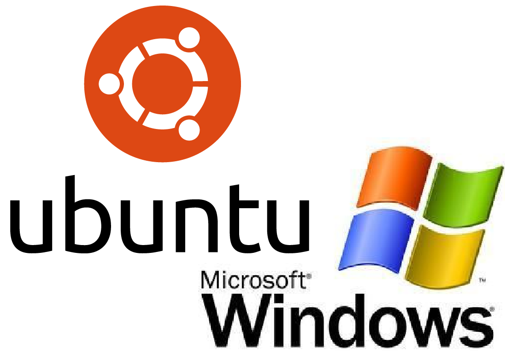Go to the Start Menu, search "partition" and click "Create and format hard disk partitions". 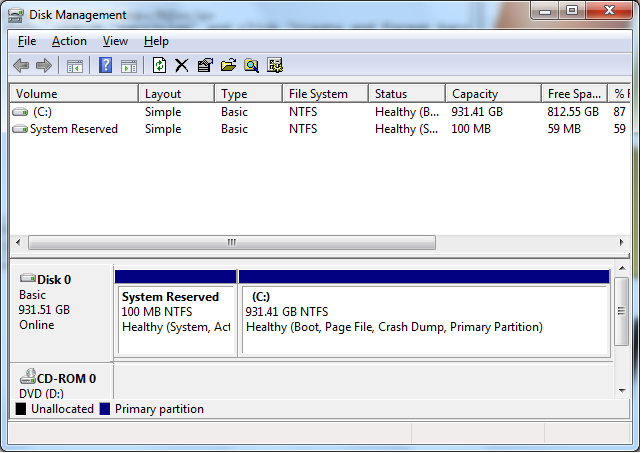
Select the larger partition, not the 100 MB partition. Right click it, and then select "Shrink Partition..." Wait a while (be patient, you set aside time to do this, right?), and then the following window should come up: 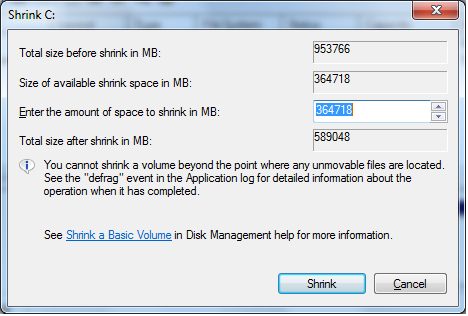
Do not mess with the selected value or your copy of Windows can get corrupt (I had that happen to me once). This is because some immovable files reside away from the huge clump of other files, and these can be critical system files. As long as that value is at least 15000 or so, you'll still have plenty of space for Ubuntu plus the apps you'll want to install. I would say the bare minimum for this value would be 6000. Now click "Shrink". Again, if you be patient, the operation should complete.
The operation completed, and now you see a rectangle that says "Unallocated". That means there is no partition there, so the computer can't do anything with it. But, you cannot use the built-in partition manager in Windows to make partitions that Linux (in this case Ubuntu) can use. So we must install a piece of software called MiniTool Partition Wizard. Download the Free Edition, and then follow the instructions to install it. Then, when you run it, click on "Launch Application", then you'll see this: 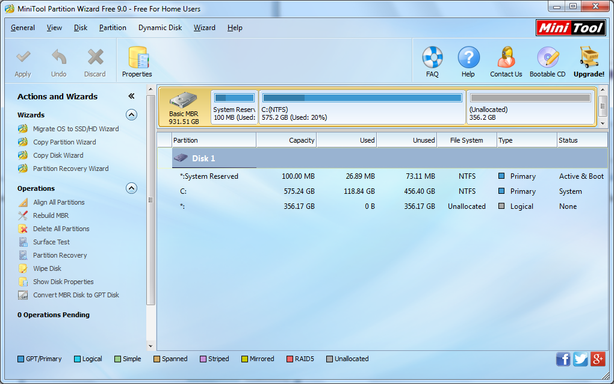
If you did the previous steps correctly, there should be some unallocated space, towards the bottom. Select that unallocated space, right click it and then left click "Create".
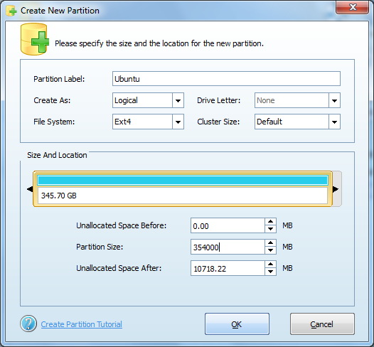 You can change the partition label to whatever you want, but you must use the following settings: "Create as: Logical", "File System: Ext4". Then click the down arrow next to the "Partition size" box until the value in the "Unallocated space after" box is at least how much RAM you have (in MB). By the way, the Ext4 file system is one that Ubuntu can use.Click OK, then Apply in the top left corner. Click yes.
Lastly, create a partition in the remaining unallocated space with the Linux swap filesystem and click apply and yes.
Don't worry, after you install Ubuntu, you don't need your USB drive to use Ubuntu.
Download it here: http://www.ubuntu.com/download/desktop
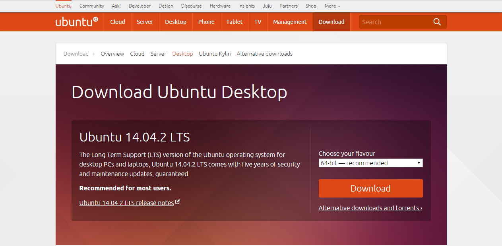Download the 64-bit version of 14.04 if you have more than 2 GB of RAM, or 32-bit if you have 2 GB or less of RAM.
While you're waiting, download Rufus Portable so you can write the Ubuntu image to your USB stick once Ubuntu has finished downloading. Now go take a break, get a coffee, eat dinner, whatever while you're waiting.
Plug in your USB drive, then launch Rufus.
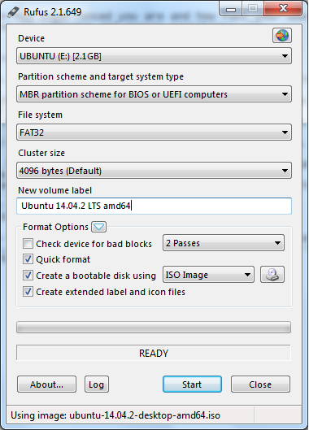Leave all the settings alone, except for the "Create a bootable disk using". Change this to "ISO image", click the icon next to it, and select your downloaded Ubuntu image file. Click Start, then OK.
Once this has finished, unplug your USB drive and reboot the computer. As soon as the Shutting Down screen disappears, repeatedly press the BIOS access key. (My computer is self-built, and the motherboard I used for it requires you to use the Del key.) Once you're in the BIOS, you need to change the boot order so that "USB", "USB Drive", "USB Removable Media" or similar is at the top or first. Usually you can find this setting under "Boot order", "Boot management", or "Advanced Boot settings", or similar. You have to navigate using the arrow keys, not the mouse. This makes the computer check to see if there are any bootable USB devices before checking for a bootable hard drive or CD.
Before rebooting your computer once more, plug in your USB drive and then reboot.
Congratulations on making it this far! Now it's time to install Ubuntu. Click on "Install Ubuntu", then check only the bottom checkbox (we'll install updates later). Now, just to be safe, we'll click on "Something else".
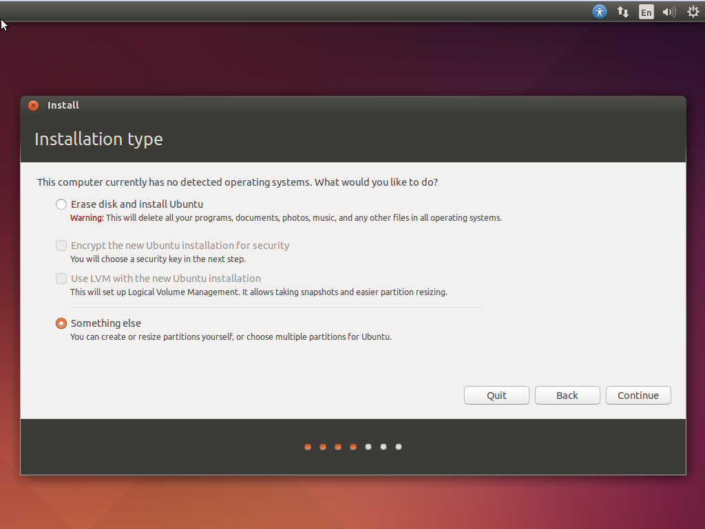Now you should be at the partitions screen.
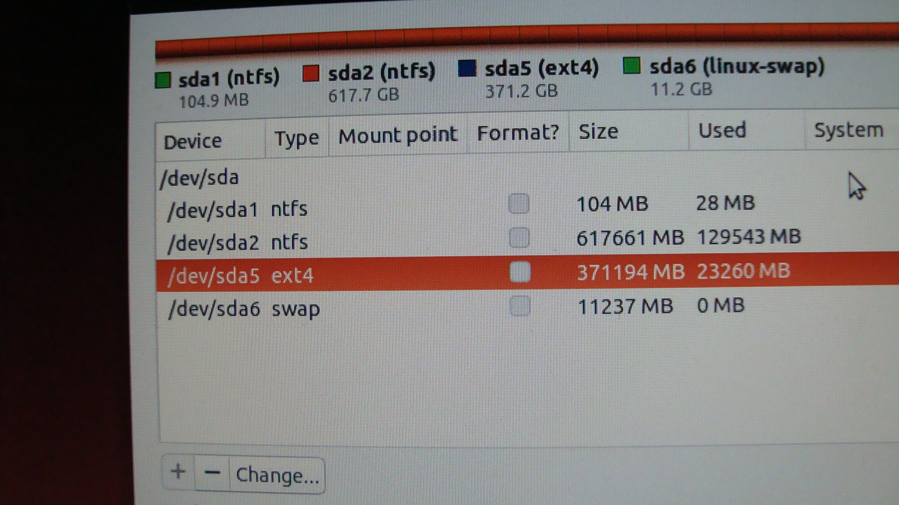Select the partition that is of type ext4 and click "Change" in the corner. You should use the settings shown in the picture, but your number value will be different.
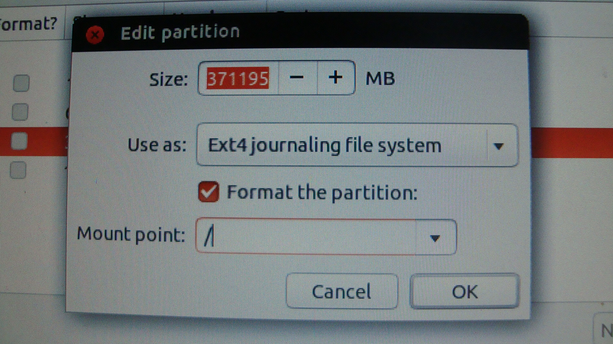Now select the partition that is of type "swap". Click "Change" and use the following settings:
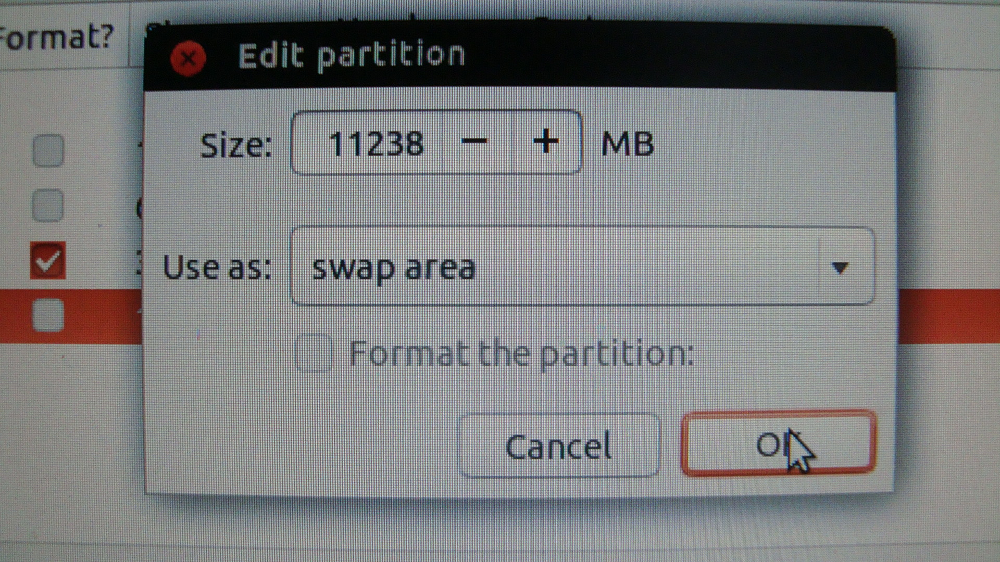Change the "Device for boot loader installation" setting to the /dev/sda that is the ext4 partition. (NOTE: It might not be /dev/sda5.) Then click Install Now.
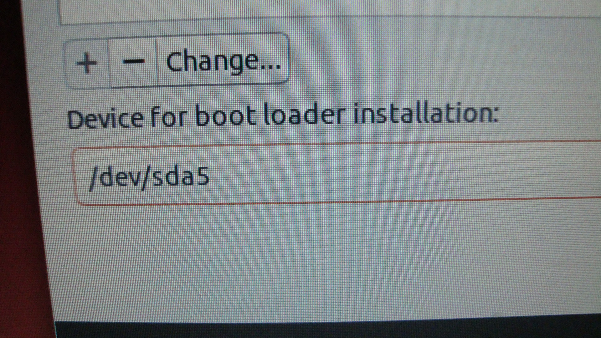Now you will be asked for your timezone, keyboard layout, and other options. You may get an error screen right after you select a username and password, just retry and it should work.
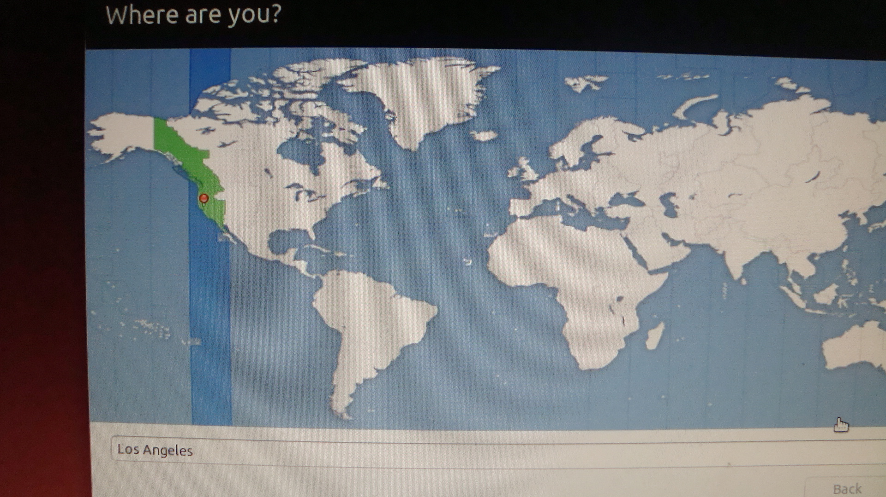 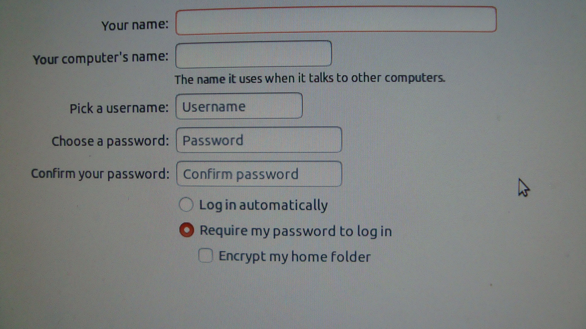 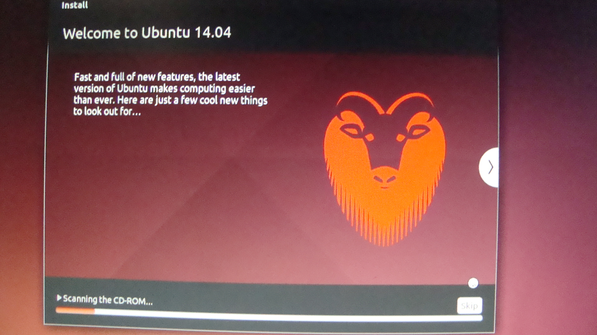Now when it's finished, click "Restart" and unplug the USB drive.
We're not done yet! We need to add Ubuntu as an option so we can choose to boot into Windows or Ubuntu. To do this, we need to install just one more piece of software: EasyBCD. This adds a menu to bootup that lets you choose the OS to boot to. Download it and follow the instructions.
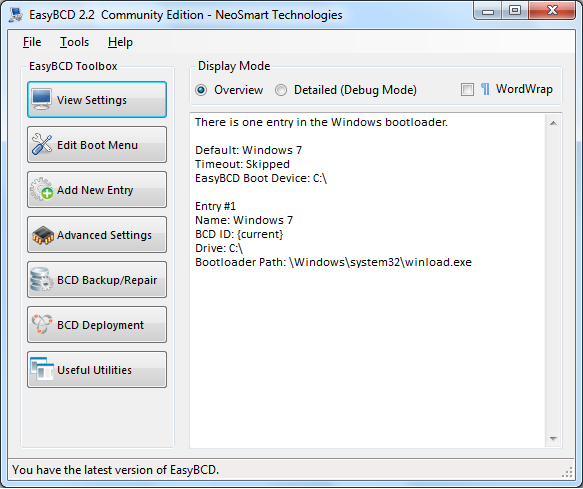Click on "Add new entry", then use the settings below: Remember, choose the partition that says "Linux", it may not be Partition 3 like in the picture.
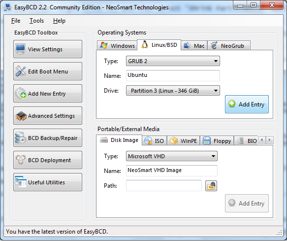Click on "Add entry", then "Edit Boot Menu". Click on the circle that says "Wait for user selection", then "Save settings".
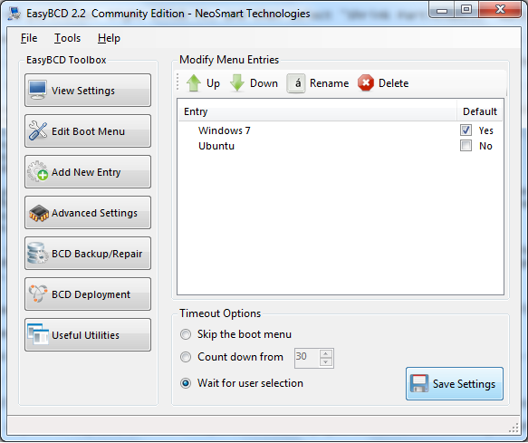Reboot your PC, without any USB drives or CDs in, and you should get the boot menu. Select "Ubuntu", obviously. Then login with the password you set earlier.
Congratulations! You've converted your PC to a double-OS machine!
Last step: updatingNow all you need to learn how to do is update Ubuntu. Just connect to your home network, then go to the Ubuntu "start menu", which is located in the top left corner as a button, then search "terminal". Click on it, then type in "sudo apt-get update", without the quotes. And that's all there is to it! Now you can go ahead and install your favorite apps and tweak the settings to your liking!